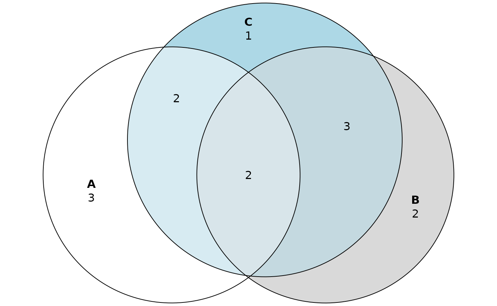
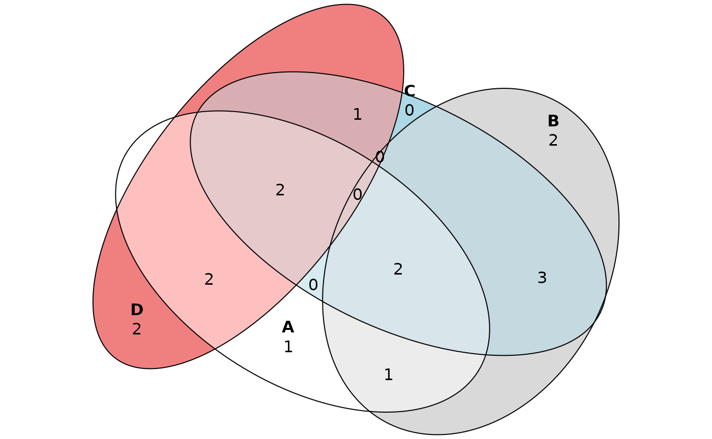

Explore Venn diagram
explore-venn.RmdVenn/Euler diagrams are widely used for the visual representation of logical relationships between sets. For example, in proteomics, we may want to compare sets of proteins detected in different samples or in different fractions of the same fractionated sample.
In visual representation of a diagram, there is difference between Venn and Euler diagram. While Venn diagram shows all possible logical relationships, Euler diagram shows only non-empty regions of a diagram and the area of a region is often proportional to the number of elements. Having the size of regions approximately proportional to the number of elements inside it is not a trivial task which makes Euler diagram more complicated to plot than the Venn diagram. eulerr (Larsson 2020) is an R package which plots nice Euler and Venn diagrams. The basic functions of eulerr are also available as an app hosted at eulerr.co.
Besides eulerr, there are many other other options available for the plotting of Venn diagram. However, Venn/Euler diagram shows only the number of elements inside its regions. visProteomics defines a complementary tabular function vennDataFrame which lists the elements found in different regions of Venn diagram. Besides the list of elements, the resulting data frame can also include different attributes of the elements. First, for vennDataFrame function to be visible, the package has to be loaded.
library(visProteomics)Simple example of Venn/Euler diagram
We define three arbitrary vectors/sets of proteins and plot their Venn and Euler diagram using the eulerr package.
proteins_A <- c("B4DPP6", "B7WNR0", "E5RH81", "P00915", "P01857", "P02768", "Q56G89", "Q5EFE6")
proteins_B <- c("B7WNR0", "E5RHP7", "F6KPG5", "H6VRG0", "P00915", "P13646", "Q56G89", "Q6P5S8")
proteins_C <- c("B4DPP6", "B7WNR0", "E5RHP7", "H6VRG0", "P02768", "P13646", "P31944", "Q56G89")
plot(eulerr::venn(list(A=proteins_A, B=proteins_B, C=proteins_C)), quantities=TRUE)

From diagrams we read that, for example, \(2\) proteins are shared by all three sets and \(1\) protein is present only in the set “C”. However, we can’t see which proteins are elements of different Venn regions. To easily view the content of Venn regions, we call vennDataFrame function where “sets” is the named list of sets. Each set has to be given as a vector of elements instead of a set.
vennDataFrame(sets=list(A=proteins_A, B=proteins_B, C=proteins_C))
#> element venn_region
#> 1 E5RH81 A
#> 2 P01857 A
#> 3 Q5EFE6 A
#> 4 F6KPG5 B
#> 5 Q6P5S8 B
#> 6 P31944 C
#> 7 P00915 A&B
#> 8 B4DPP6 A&C
#> 9 P02768 A&C
#> 10 E5RHP7 B&C
#> 11 H6VRG0 B&C
#> 12 P13646 B&C
#> 13 B7WNR0 A&B&C
#> 14 Q56G89 A&B&CThe resulting data frame shows all elements found in different Venn regions. The Venn regions are named using the “&” symbol for intersection of sets. Now we can easily read that proteins “B7WNR0” and “Q56G89” are present in all three sets and that protein “P31944” is present only in set “C”.
If instead of the whole list of proteins, we are only interested in their count we set “only_counts” parameter to TRUE. In this case only the numerical values visible in Venn diagram are reported.
vennDataFrame(list(A=proteins_A, B=proteins_B, C=proteins_C), only_counts=TRUE)
#>
#> A B C A&B A&C B&C A&B&C
#> 3 2 1 1 2 3 2Adding description of elements
Instead of the vectors, sets can also be given as data frames. This allows for an additional description of elements. For example, using the “data_top20” included in visProteomics package, we get the list of proteins found in different fractions of a fractionated sample. Now we can define three different sets taking only proteins found in the first, second and third fraction. We can use vennDataFrame function to compare the three sets. All three data frames have to include the column with element IDs and the name of the column has to be provided as an argument to “by” parameter. If besides the element IDs, we want to include additional information about the elements the columns with additional information have to be given to “columns_to_keep” parameter.
data("data_top20", package="visProteomics")
data_1stFrac <- data_top20[data_top20$Fraction_Number==1,]
data_2ndFrac <- data_top20[data_top20$Fraction_Number==2,]
data_3rdFrac <- data_top20[data_top20$Fraction_Number==3,]
vennDataFrame(list(first=data_1stFrac, second=data_2ndFrac, third=data_3rdFrac), by="Accession", columns_to_keep=c("Sum_Coverage", "pI"))
#> Accession venn_region Sum_Coverage pI
#> 1 Q53H26 first 27.36 7.03
#> 2 P00915 first 35.63 7.12
#> 3 P31151 first 35.64 6.77
#> 4 P02671 first 2.54 6.01
#> 5 P01766 first 21.67 6.57
#> 6 P31025 first 12.5 5.58
#> 7 B4DI57 second 6.48 7.21
#> 8 P02652 second 21 6.62
#> 9 P01024 second 1.02 6.4
#> 10 P02649 third 6.31 5.73
#> 11 P31944 first&second first=14.46;second=8.68 5.58
#> 12 P01859 first&second 13.19 7.59
#> 13 P0CG48 first&second first=38.1;second=24.96 7.66
#> 14 P02647 second&third second=8.24;third=12.36 5.76
#> 15 P59665 second&third 19.15 6.99
#> 16 P02768 first&second&third first=22.99;second=20.69;third=17.24 6.28
#> 17 P01857 first&second&third first=18.18;second=18.18;third=11.82 8.19
#> 18 P01834 first&second&third first=65.09;second=32.08;third=32.08 5.87
#> 19 Q14118 first&second&third first=3.8;second=3.8;third=2.35 8.56The resulting data frame contains protein IDs in “Accession” column and the respective Venn region in “venn_region” column. Additionally, “Sum_Coverage” and “pI” columns are included. If the value of a certain attribute for the same protein differs among the sets, all values are reported. For example, protein “P01859” has “Sum_Coverage” equal to \(13.19\) in first and second fraction while “Sum_Coverage” of “P31944” differs between the fractions.
Comparison of multiple data sets
While Venn diagrams are usually used for up to three sets, the eulerr package allows the use of up to five sets. We define additional arbitrary set of proteins “D”.
proteins_D = c("B4DI57", "B4DPP6", "E5RH81", "P01857", "P02768", "P31944", "Q14118")
plot(eulerr::euler(list(A=proteins_A, B=proteins_B, C=proteins_C, D=proteins_D), shape="ellipse"), quantities=TRUE)
vennDataFrame function doesn’t have the maximum allowed number of sets. If the “sets” parameter is unnamed list then the default set names are used: A, B, C…
vennDataFrame(list(proteins_A, proteins_B, proteins_C, proteins_D))
#> element venn_region
#> 1 Q5EFE6 A
#> 2 F6KPG5 B
#> 3 Q6P5S8 B
#> 4 B4DI57 D
#> 5 Q14118 D
#> 6 P00915 A&B
#> 7 E5RH81 A&D
#> 8 P01857 A&D
#> 9 E5RHP7 B&C
#> 10 H6VRG0 B&C
#> 11 P13646 B&C
#> 12 P31944 C&D
#> 13 B7WNR0 A&B&C
#> 14 Q56G89 A&B&C
#> 15 B4DPP6 A&C&D
#> 16 P02768 A&C&DReferences
Larsson, Johan. 2020. eulerr: Area-Proportional Euler and Venn Diagrams with Ellipses. https://cran.r-project.org/package=eulerr.